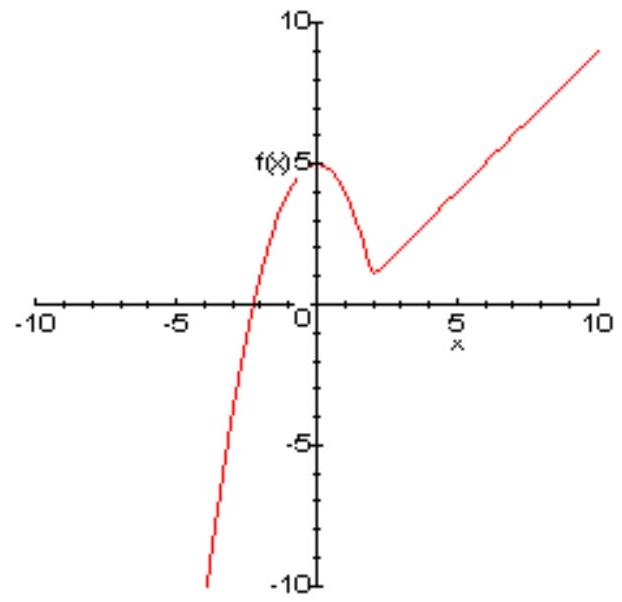
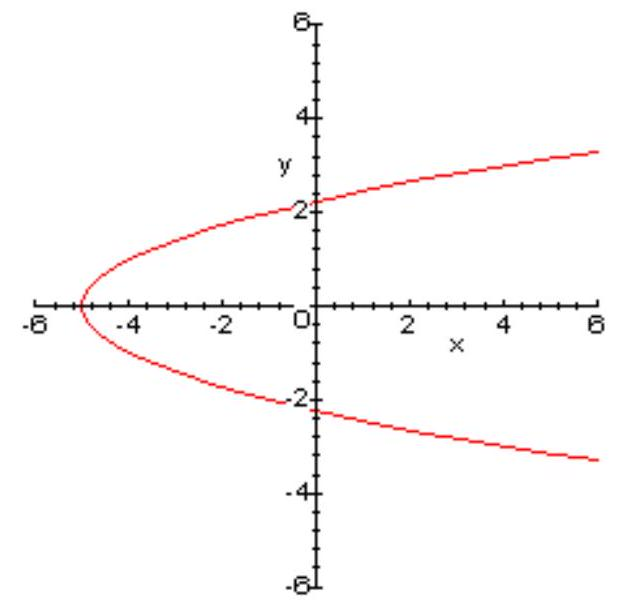
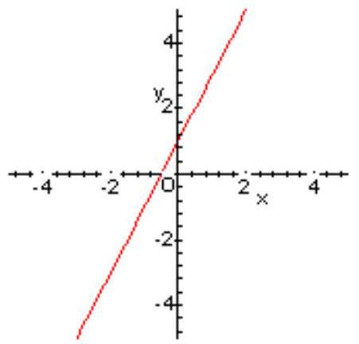
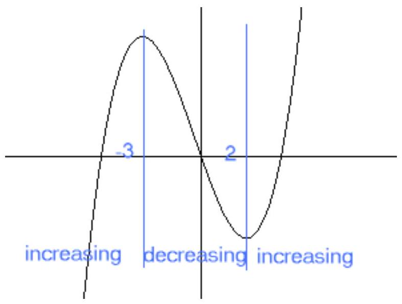
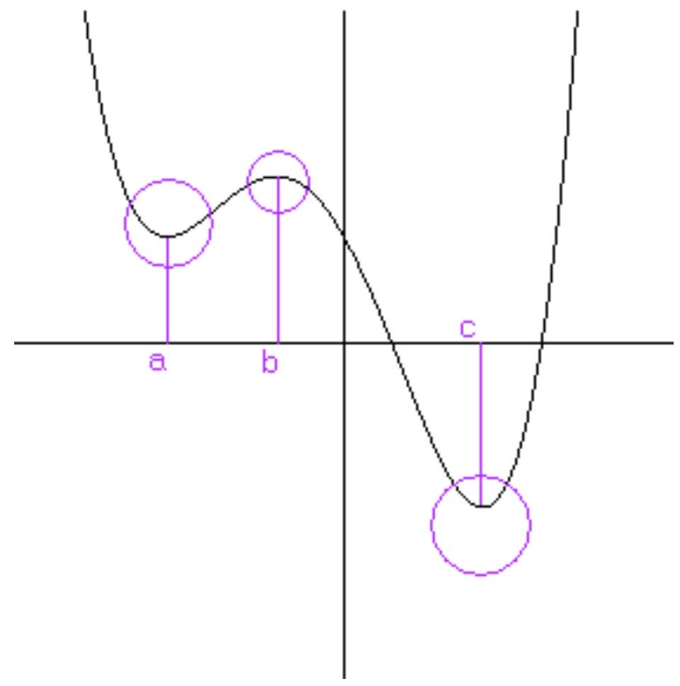

CHAPTER 6: GRAPHS OF FUNCTIONS
Defining the Graph of a Function
The graph of a function $f$ is the set of all points in the plane of the form $(x, f(x))$. We could also define the graph of $f$ to be the graph of the equation $y=f(x)$. So, the graph of a function if a special case of the graph of an equation.
Example 1.
Let $\mathbf{f}(\mathbf{x})=\mathbf{x}^{\mathbf{2}} \mathbf{- 3}$.
Recall that when we introduced graphs of equations we noted that if we can solve the equation for y , then it is easy to find points that are on the graph. We simply choose a number for x , then compute the corresponding value of $y$. Graphs of functions are graphs of equations that have been solved for y !
The graph of $f(x)$ in this example is the graph of $y=x^{2}-3$. It is easy to generate points on the graph. Choose a value for the first coordinate, then evaluate $f$ at that number to find the second coordinate. The following table shows several values for x and the function f evaluated at those numbers.
| x | -2 | -1 | 0 | 1 | 2 |
|---|---|---|---|---|---|
| f(x) | 1 | -2 | -3 | -2 | 1 |
Each column of numbers in the table holds the coordinates of a point on the graph of f .
Exercise 1:
(a) Plot the five points on the graph of f from the table above, and based on these points, sketch the graph of f .
Example 2.
Let f be the piecewise-defined function
The graph of f is shown below.
2" class="content-image">Exercise 2:
Graph the piecewise-defined function
We have seen that some equations in x and y do not describe y as a function of x . The algebraic way see if an equation determines $y$ as a function of $x$ is to solve for $y$. If there is not a unique solution, then y is not a function of x .
Suppose that we are given the graph of the equation. There is an easy way to see if this equation describes $y$ as a function of $x$.
Vertical Line Test
A set of points in the plane is the graph of a function if and only if no vertical line intersects the graph in more than one point.
Example 3.
The graph of the equation $\mathbf{y}^{\mathbf{2}}=\mathbf{x}+\mathbf{5}$ is shown below.
By the vertical line test, this graph is not the graph of a function, because there are many vertical lines that hit it more than once.
Think of the vertical line test this way. The points on the graph of a function f have the form ( x , $f(x)$ ), so once you know the first coordinate, the second is determined. Therefore, there cannot be two points on the graph of a function with the same first coordinate.
All the points on a vertical line have the same first coordinate, so if a vertical line hits a graph twice, then there are two points on the graph with the same first coordinate. If that happens, the graph is not the graph of a function
Characteristics of Graphs
Consider the function $f(x)=2 x+1$. We recognize the equation $y=2 x+1$ as the SlopeIntercept form of the equation of a line with slope 2 and $y$-intercept $(0,1)$.
Think of a point moving on the graph of f . As the point moves toward the right it rises. This is what it means for a function to be increasing. Your text has a more precise definition, but this is the basic idea.
The function f above is increasing everywhere. In general, there are intervals where a function is increasing and intervals where it is decreasing.
The function graphed above is decreasing for x between -3 and 2 . It is increasing for x less than -3 and for x greater than 2 .
Using interval notation, we say that the function is decreasing on the interval ( -3, 2 ) increasing on (-infinity, -3 ) and (2, infinity)
Exercise 3:
Graph the function $f(x)=x^{2}-6 x+7$ and find the intervals where it is increasing and where it is decreasing.
Answer
- decreasing on (-infinity, 3 )
- increasing on (3, infinity)
Some of the most characteristics of a function are its Relative Extreme Values. Points on the functions graph corresponding to relative extreme values are turning points, or points where the function changes from decreasing to increasing or vice versa. Let $f$ be the function whose graph is drawn below.
f is decreasing on (-infinity, $a$ ) and increasing on ($a, b$), so the point ($a, f(a)$) is a turning point of the graph. $f(a)$ is called a relative minimum of $f$. Note that $f(a)$ is not the smallest function value, $\mathrm{f}(\mathrm{c})$ is. However, if we consider only the portion of the graph in the circle above a, then $f(a)$ is the smallest second coordinate. Look at the circle on the graph above b. While $f(b)$ is not the largest function value (this function does not have a largest value), if we look only at the portion of the graph in the circle, then the point (b, f(b)) is above all the other points. So, $f(b)$ is a relative maximum of $f$. $f(c)$ is another relative minimum of $f$. Indeed, $f(c)$ is the absolute minimum of $f$, but it is also one of the relative minima.
Here again we are giving definitions that appeal to your geometric intuition. The precise definitions are given in your text.
Approximating Relative Extrema
Suppose a is a number such that $f(a)$ is a relative minimum. In applications, it is often more important to know where the function attains its relative minimum than it is to know what the relative minimum is.
For example, $f(x)=x^{3}-4 x^{2}+4 x$ has a relative minimum of 0 . It attains this relative minimum at $x=2$, so $(2,0)$ is a turning point of the graph of $f$. We will call the point $(2,0)$ a relative minimum point. In general, a relative extreme point is a point on the graph of $f$ whose second coordinate is a relative extreme value of $f$.
Even and Odd Functions
A function f is even if its graph is symmetric with respect to the y -axis. This criterion can be stated algebraically as follows: $f$ is even if $f(-x)=f(x)$ for all $x$ in the domain of $f$. For example, if you evaluate f at 3 and at -3 , then you will get the same value if f is even.
A function f is odd if its graph is symmetric with respect to the origin. This criterion can be stated algebraically as follows: $f$ is odd if $f(-x)=-f(x)$ for all $x$ in the domain of $f$. For example, if you evaluate $f$ at 3 , you get the negative of $f(-3)$ when $f$ is odd.